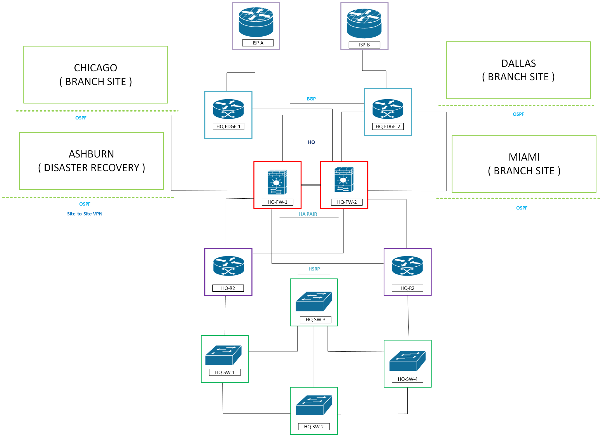

Documented Technical Evidence
Hands-on networking projects demonstrating routing, switching, network troubleshooting, packet analysis, monitoring, network security, and operational troubleshooting.
This portfolio focuses on documented technical evidence, including Cisco CLI output, Wireshark packet captures, configuration changes, incident documentation, monitoring evidence, and verification results.
Featured Projects
Each project is documented with configs, packet captures, verification output, and diagrams.

Network Incident Response Lab
Nine end-to-end network incidents investigated using an operations workflow covering symptoms, evidence, root cause, remediation, and verification.
View Project →
Meridian Financial Services
Five-site enterprise network (New York HQ, Chicago, Dallas, Miami, and an Ashburn disaster recovery site) with dual-ISP eBGP, multi-area OSPF, HSRP, ASA firewalls, ISE 802.1X, IPsec and AnyConnect VPN, Azure hybrid connectivity, Windows services, wireless, SIEM and monitoring, and Ansible automation.
View on GitHub →In progress

Network Automation & Compliance Engine
A roughly 10,000-line Python pipeline with unit and integration tests. It pulls desired state from NetBox, collects device state through APIs and Netmiko, detects configuration drift, remediates, re-validates, and produces compliance reports.
More projects are in progress. Each one is added here once its write-up and evidence are complete.
Proof of Skills
Packet Analysis
Wireshark & PCAP Analysis
Packet-level evidence from DHCP, OSPF, ACL, SNMP, DHCP Relay, NAT, BGP, and HSRP troubleshooting.
View Evidence →
Cisco IOS
Cisco CLI
Documented Cisco IOS troubleshooting commands, routing verification, switching verification, configuration analysis, and post-remediation checks.
View Evidence →
Routing & Switching
Routing & Switching
Hands-on troubleshooting involving OSPF, BGP, HSRP, VLANs, STP, EtherChannel, DHCP, NAT, and Layer 2/Layer 3 connectivity.
View Evidence →
Troubleshooting
Network Troubleshooting
Structured troubleshooting using symptoms, packet captures, CLI evidence, logs, configuration comparison, remediation, and verification.
View Evidence →
Monitoring
Network Monitoring
Monitoring and troubleshooting evidence using SolarWinds, Splunk, SNMP, logs, and operational verification.
View Evidence →
Operations
Network Operations
Incident-based troubleshooting documented using ticketing, investigation, root-cause analysis, remediation, and verification workflows.
View Evidence →
Systems & Identity
Windows & Identity Services
DHCP, DNS, Group Policy (password and lockout policy), NTFS file share permissions with denied-access testing, NTP, RDP, and Windows event logging into Splunk.
View Evidence →
Cloud
Microsoft 365
MFA enrollment, license and role assignment, SharePoint and OneDrive configuration, version control, and audit and sign-in log review.
View Evidence →Network Operations
Incident Management
Incident Ticketing
ServiceNow-style incident documentation showing symptoms, investigation, root cause, remediation, and resolution.
View Ticket →
RCA
Incident Response Lab
Nine documented network incidents with supporting CLI output, PCAPs, configurations, monitoring data, and verification evidence.
View Incidents →Featured Writing
Deep dives into routing, wireless, and network fundamentals from my Networking Notebook.
Contact
Interested in discussing networking, infrastructure, troubleshooting, or entry-level network engineering opportunities?
Contact Me → GitHub →